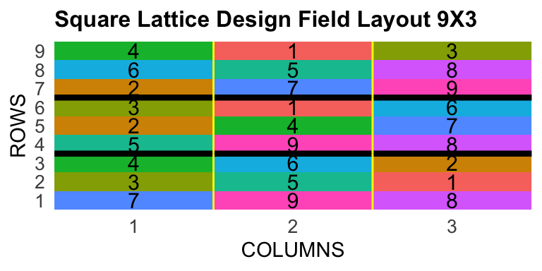
ID LOCATION PLOT REP IBLOCK UNIT ENTRY TREATMENT
1 1 PIRACICABA 1001 1 1 1 7 G-7
2 2 PIRACICABA 1002 1 1 2 3 G-3
3 3 PIRACICABA 1003 1 1 3 4 G-4Escola Superior de Agricultura Luiz de Queiroz - Universidade de São Paulo
2026-01-13
Agronomist (UFCA- 2018)
Msc. in Genetics and plant breeding (UENF-2020)
Dsc. in Genetics and breeding (UFV- 2024)
Postdoctoral research scholar (UFV-2024-2025); (ESALQ/USP-2025)
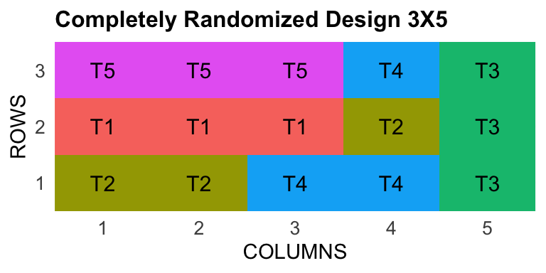
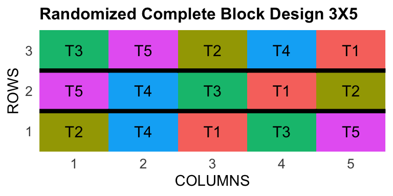

ID LOCATION PLOT REP IBLOCK UNIT ENTRY TREATMENT
1 1 PIRACICABA 1001 1 1 1 7 G-7
2 2 PIRACICABA 1002 1 1 2 3 G-3
3 3 PIRACICABA 1003 1 1 3 4 G-4 ID LOCATION PLOT ROW COLUMN CHECKS BLOCK ENTRY
1 1 PIRACICABA 1001 1 1 1 1 3
2 2 PIRACICABA 1002 1 2 1 1 2
3 3 PIRACICABA 1003 1 3 0 1 23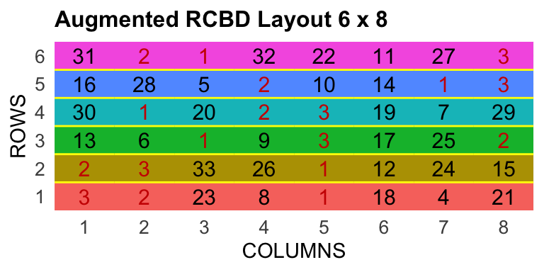
Henderson (1953) (animal breeder) propose the mixed models equations.
Enables Best linear unbiased prediction (BLUP) and Best Linear Unbiased Estimator (BLUE).
\[ \textbf{y} = \mathbf{X}\beta + \mathbf{Z}u+ \mathbf{e} \]
\[ \begin{bmatrix} \mathbf{X}'\mathbf{X} & \mathbf{X}'\mathbf{Z} \\ \mathbf{Z}'\mathbf{X} & \mathbf{Z}'\mathbf{Z} + \lambda \mathbf{K}^{-1} \end{bmatrix} \begin{bmatrix} \mathbf{\hat{b}} \\ \mathbf{\hat{u}} \end{bmatrix} = \begin{bmatrix} \mathbf{X}'\mathbf{y} \\ \mathbf{Z}'\mathbf{y} \end{bmatrix} \]
Patterson and Thompson (1971) Restricted Maximum Likelihood (REML) of random \(u\) and fixed effects \(\beta\).
\[ f(x)= \frac{1}{\sigma \sqrt{2\pi}}e^{-\frac{1}{2}(\frac{x-\mu}{\sigma})^2} \]
The maximum likelihood function seeks to optimize the values of the mean \(\mu\) and variance \(\sigma\), given the observations and considering normal distribution.
Neste exemplo consideramos 100 valores aleatórios gerados de uma distribuição normal com média 10 (\(\mu\)) e desvio padrão \(\sqrt{10}\) (\(\sigma\))
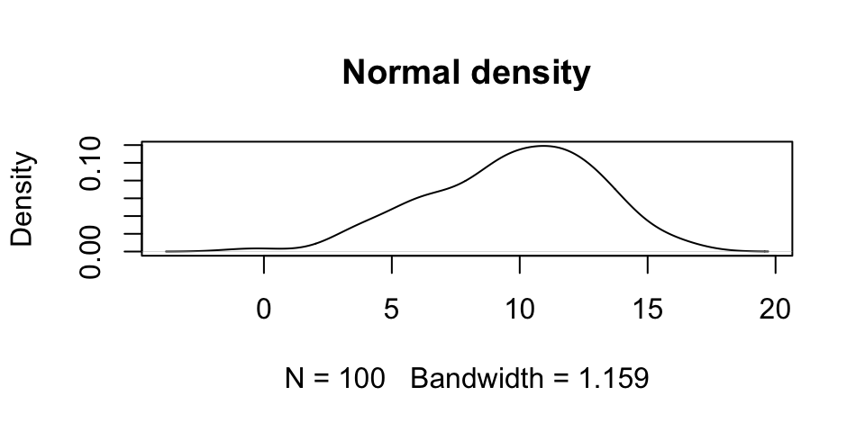
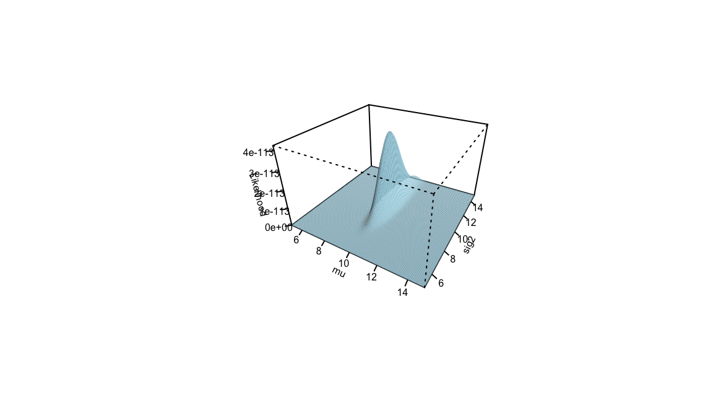
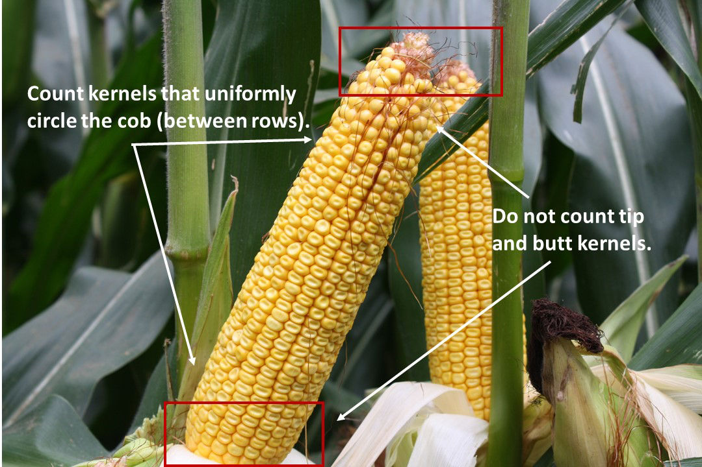
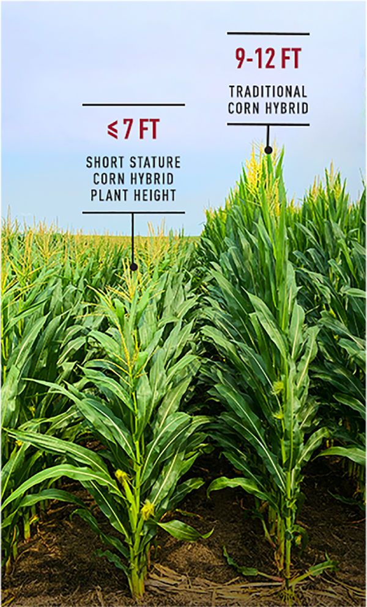
2 traits; 100 genotypes; 2 blocks
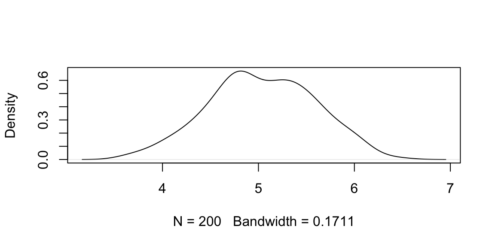
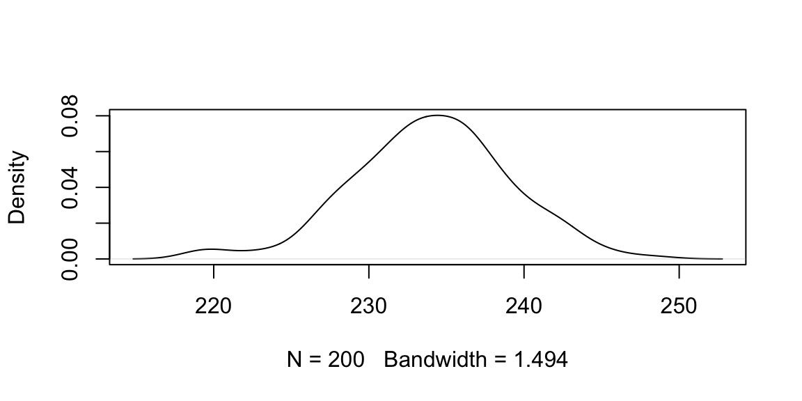
\[ \begin{bmatrix} \mathbf{X}'\mathbf{X} & \mathbf{X}'\mathbf{Z} \\ \mathbf{Z}'\mathbf{X} & \mathbf{Z}'\mathbf{Z} + \lambda \mathbf{K}^{-1} \end{bmatrix} \begin{bmatrix} \mathbf{\hat{b}} \\ \mathbf{\hat{u}} \end{bmatrix} = \begin{bmatrix} \mathbf{X}'\mathbf{y} \\ \mathbf{Z}'\mathbf{y} \end{bmatrix} \]
| block1 | block2 |
|---|---|
| 1 | 0 |
| 1 | 0 |
| 1 | 0 |
| id1 | id2 | id3 |
|---|---|---|
| 0 | 0 | 0 |
| 0 | 0 | 0 |
| 0 | 0 | 0 |
| pheno |
|---|
| 5.513532 |
| geno | erro |
|---|---|
| 0.0948 | 0.2075 |
| block1 | block2 | |
|---|---|---|
| block1 | 100 | 0 |
| block2 | 0 | 100 |
| id1 | id2 | |
|---|---|---|
| block1 | 1 | 1 |
| block2 | 1 | 1 |
| block1 | block2 | |
|---|---|---|
| id1 | 1 | 1 |
| id2 | 1 | 1 |
| id1 | id2 | |
|---|---|---|
| id1 | 2 | 0 |
| id2 | 0 | 2 |
| block1 | 498.0205 |
| block2 | 509.2963 |
| x |
|---|
| 8.834306 |
| 10.478144 |
block1 block2 id1
block1 100 0 1.000000
block2 0 100 1.000000
id1 1 1 4.188819 [,1]
block1 498.020468
block2 509.296324
id1 8.834306
id2 10.478144 [,1]
block1 4.98020468
block2 5.09296324
id1 -0.29575450
id2 0.09668033Solving mixed models with package LME4[1] 4.980205 5.092963| x |
|---|
| -0.2957545 |
| 0.0966803 |
| 0.3478739 |
| -0.0073687 |
| -0.0808127 |
| -0.2544430 |
(Intercept) rep2
4.9802047 0.1127586 | x | |
|---|---|
| id.(Intercept)1 | -0.3126610 |
| id.(Intercept)2 | 0.1022069 |
| id.(Intercept)3 | 0.3677597 |
| id.(Intercept)4 | -0.0077899 |
| id.(Intercept)5 | -0.0854323 |
| id.(Intercept)6 | -0.2689879 |
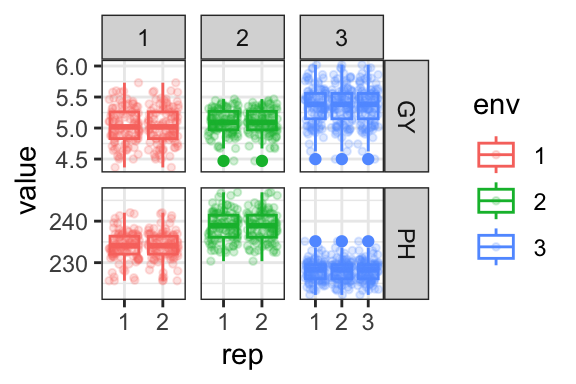
Table 8: GY and PH evaluated in multenvironmental trials
\[ \mathbf{y} = \mathbf{X}_1\mathbf{e} + \mathbf{X}_2\mathbf{be} + \mathbf{Z}_1\mathbf{g} + \mathbf{Z}_2\mathbf{ge} + \mathbf{\epsilon} \]
\([\mathbf{g}\sim N(0,\sigma_g^2\mathbf{I}_n)]\) and \([\mathbf{ge}\sim N(0,\sigma_{ge}^2\mathbf{I}_{np})]\), where \(n\) is the number of genotypes and \(p\) is the number of environments.
2 traits; 100 genotypes; 2-3 blocks; 3 environments
Testing genotype and genotype \(\times\) environment interaction effects along traits.
\[ LRT = -2(LogL_-LogL_{r}) \]
where \(LogL\) é o ponto de máxima da função de verossimilhança residual do modelo completo e \(LogL_{r}\) é o mesmo para o modelo reduzido.
[1] 43.31988Data: pheno_df
Models:
mmcr: y.GY ~ env + rep:env + (1 | id)
mmc: y.GY ~ env + rep:env + (1 | id) + (1 | id:env)
npar AIC BIC logLik -2*log(L) Chisq Df Pr(>Chisq)
mmcr 9 1096.1 1137.0 -539.03 1078.1
mmc 10 1054.3 1099.8 -517.15 1034.3 43.758 1 3.717e-11 ***
---
Signif. codes: 0 '***' 0.001 '**' 0.01 '*' 0.05 '.' 0.1 ' ' 1| (Intercept) | |
|---|---|
| id:env.1:1 | -0.2994339 |
| id:env.1:2 | -0.0883629 |
| id:env.1:3 | 0.1092676 |
| id:env.2:1 | 0.0992936 |
| id:env.2:2 | -0.0491773 |
| id:env.2:3 | 0.0160696 |
| (Intercept) | |
|---|---|
| id.1 | -0.0310489 |
| id.2 | 0.0073780 |
| id.3 | 0.0317793 |
| id.4 | -0.0026264 |
| id.5 | 0.0316266 |
| id.6 | -0.0007239 |
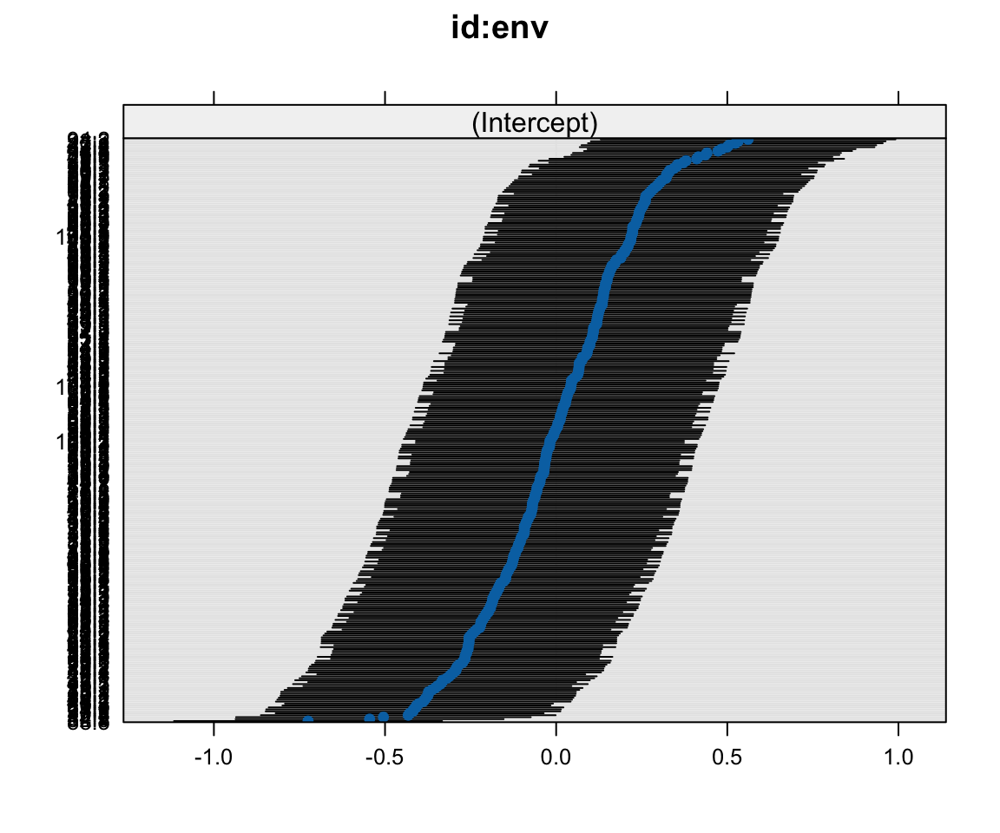
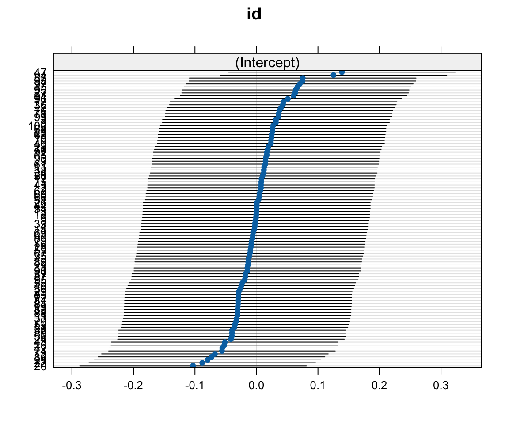
Several indexes were proposed with and without restrictions (Smith (1936) & Hazel (1943) ; Kempthorne and Nordskog (1959)). We take a deep look in Factor analysis and ideotype design index (FAI-BLUP)(Rocha, Machado, and Carneiro 2018) and Bayesian probabilistic selection index (BPSI)(Chagas et al. 2025).
\[ \hat{\underline{b}} = \hat{P}^{-1} \hat{G} \hat{a};\; \] where \(\hat{P}\) and \(\hat{G}\) are phenotypic and genotypic variance-covariance matrix, respectively, and \(\hat{a}\) are relative economic values.
\[ \underline{b} = G^{-1} \underline{q} \] where \(G\) is the genotypic variance-covariance matrix and \(q\) is the vector of desired gains (Pešek and Baker 1969)
| PH_1 | PH_2 | |
|---|---|---|
| 39 | 238.25 | 239.84 |
| 4 | 226.52 | 232.95 |
| 11.46 | 6.34 | 0.90 | -0.08 |
| 6.34 | 12.75 | -0.35 | 0.28 |
| 0.90 | -0.35 | 5.88 | 0.08 |
| -0.08 | 0.28 | 0.08 | 0.09 |
| x |
|---|
| -1 |
| -1 |
| -1 |
| 2 |
| 2 |
| 2 |
| 0.3030121 |
| -0.6317332 |
| -0.7779787 |
| 6.9098122 |
| 15.9867062 |
| 3.9098938 |
| 0.2303050 |
| -0.6263726 |
| -0.8032517 |
| 7.2542133 |
| 16.1879586 |
| 5.1908039 |
| x | |
|---|---|
| PH_1 | 0.3386552 |
| PH_2 | 0.5247615 |
| PH_3 | -0.6109782 |
| GY_1 | 0.3010492 |
| GY_2 | 0.2870106 |
| GY_3 | 0.2522658 |
| x |
|---|
| 1.262474 |
| x | |
|---|---|
| PH_1 | 0.2606474 |
| PH_2 | 0.5924429 |
| PH_3 | -0.6445062 |
| GY_1 | 0.2488413 |
| GY_2 | 0.2344179 |
| GY_3 | 0.2209354 |
| x |
|---|
| 1.380423 |
Maize simulated dataset (2 traits * 3 enviroments)
To proceed factor analysis, we should do the pearson correlation between traits and create matrix correlation.
Blups per trait:env GY_1 GY_2 GY_3 PH_1 PH_2 PH_3
1 -0.30 -0.09 0.11 -1.52 -3.48 2.40
2 0.10 -0.05 0.02 -4.96 -2.95 1.57
3 0.35 0.04 -0.11 -3.73 1.40 0.97Blups per trait:env standarized GY_1 GY_2 GY_3 PH_1 PH_2 PH_3
1 -1.38 -0.40 0.50 -0.65 -1.35 1.15
2 0.46 -0.22 0.07 -2.08 -1.15 0.78
3 1.63 0.19 -0.51 -1.57 0.49 0.52 GY_1 GY_2 GY_3 PH_1 PH_2 PH_3
GY_1 1.00 -0.05 -0.15 -0.03 0.25 -0.09
GY_2 -0.05 1.00 0.04 -0.08 0.13 0.19
GY_3 -0.15 0.04 1.00 0.09 -0.29 0.29
PH_1 -0.03 -0.08 0.09 1.00 0.09 -0.44
PH_2 0.25 0.13 -0.29 0.09 1.00 -0.61
PH_3 -0.09 0.19 0.29 -0.44 -0.61 1.00Correlation near to zero leading to different factors. Representing correlation among traits Correlações próximas de zero propiciam a extração de fatores diferentes. Representar as correlações entre os traits por meio de variáveis latentes (fatores).
Determinação dos autovalores pela seguinte equação:
\([\det(\lambda^2.I-\rho) = 0]\)
Multiplicado por uma matriz identidade diminuida da matriz de correlações \(\rho\)
\[ \begin{bmatrix} \lambda^2 & 0 & 0 & \cdots & 0 \\ 0 & \lambda^2 & 0 & \cdots & 0 \\ 0 & 0 & \lambda^2 & \cdots & 0 \\ \vdots & \vdots & \vdots & \ddots & \vdots \\ 0 & 0 & 0 & \cdots & \lambda^2 \end{bmatrix} \begin{bmatrix} \rho_{11} & \rho_{12} & \rho_{13} & \cdots & \rho_{1n} \\ \rho_{21} & \rho_{22} & \rho_{23} & \cdots & \rho_{2n} \\ \rho_{31} & \rho_{32} & \rho_{33} & \cdots & \rho_{3n} \\ \vdots & \vdots & \vdots & \ddots & \vdots \\ \rho_{n1} & \rho_{n2} & \rho_{n3} & \cdots & \rho_{nn} \end{bmatrix}\cdots \begin{bmatrix} \lambda^2 - \rho_{11} & -\rho_{12} & -\rho_{13} & \cdots & -\rho_{1n} \\ -\rho_{21} & \lambda^2 - \rho_{22} & -\rho_{23} & \cdots & -\rho_{2n} \\ -\rho_{31} & -\rho_{32} & \lambda^2 - \rho_{33} & \cdots & -\rho_{3n} \\ \vdots & \vdots & \vdots & \ddots & \vdots \\ -\rho_{n1} & -\rho_{n2} & -\rho_{n3} & \cdots & \lambda^2 - \rho_{nn} \end{bmatrix}= 0 \]
Obtenção do polinôminio característica de ordem relativa à quantidade de fatores.
(n características - ordem n)
Error term: 0.6184691 Polinômio característico0.3092 - 2.9479*x + 10.0401*x^2 - 16.4821*x^3 + 14.0802*x^4 - 6*x^5 + x^6 Raízes do polinômio - Autovalores[1] 1.9997 1.2533 1.0440 0.8728 0.6073 0.2230Os auto valores são as raízes do polinômio característico da matriz de correlações.
A soma dos autovalores é igual a quantidade de variáveis originais
[1] 6Percentual de variância - valor do autovalor dividido pelo total
[1] 33.3276 20.8876 17.3999 14.5471 10.1215 3.7164Os autovetores são derivados dos autovalores e resultam de um sistema de equações.
\[ [det(\lambda^2.I-\rho)\mathbf{v}_i = 0] \]
\[ \begin{bmatrix} \lambda^2 - \rho_{11} & -\rho_{12} & -\rho_{13} & \cdots & -\rho_{1n} \\ -\rho_{21} & \lambda^2 - \rho_{22} & -\rho_{23} & \cdots & -\rho_{2n} \\ -\rho_{31} & -\rho_{32} & \lambda^2 - \rho_{33} & \cdots & -\rho_{3n} \\ \vdots & \vdots & \vdots & \ddots & \vdots \\ -\rho_{n1} & -\rho_{n2} & -\rho_{n3} & \cdots & \lambda^2 - \rho_{nn} \end{bmatrix} \begin{bmatrix} v_{i1} \\ v_{i2} \\ v_{i3} \\ \vdots \\ v_{in} \end{bmatrix}= 0 \]
\[ (\lambda^2 - \rho_{11}) v_{i1} - \rho_{12} v_{i2} - \rho_{13} v_{i3} - \cdots - \rho_{1n} v_{in} = 0 ] \]
Obtido por meio do autovalor dividido pela raiz quadrada do seu respectivo autovetor.
Indica relação com as variáveis originais.
\[ S_{11}=\frac{v_{11}}{\sqrt{\lambda^2_1}} \]
Os escores fatoriais multiplicados pelas variáveis padronizadas (Zscore) geram os fatores.
A grandeza dos escores para cada variável representará o seu peso em cada fator.
\[ S_{11}=\frac{v_{11}}{\sqrt{\lambda^2_1}} \]
Representam as correlações de pearson entre os fatores extraídos e as variáveis originais (+carga = +importância da variável em cada fator).
O resultado da soma das cargas fatoriais ao quadrado de cada fator é próprio autovalor do qual ele foi extraído.
Mais informações sobre a história da análise fatorial nesse artigo Bartholomew (1995)
\[ P_{ij} = \frac{\frac{1}{d_{ij}}}{\sum^{i=n;j=m}_{i=1;j=1} \frac{1}{d_{ij}}} \]
\(P_{ij}\) probabilidade do i-ésimo genótipo ser similar ao j-ésimo ideótipo, \(d_{ij}\) distância genótipo-ideótipo euclidiana padronizada.
BPSI index uses the probability of superior performance to estimate the chance of a genotype being selected in multienvironmental trials Dias et al. (2022).
\[ Pr\left({\hat{g}}_i \in \Omega \middle| y\right) = \frac{1}{s}\sum_{s=1}^{s} I \left({\hat{g}}_i^{(s)} \in \Omega \middle| y\right) \tag{1} \] where \(\hat{g}_i\) is the genotypic value, \(\Omega\) is a subset of genotypes with superior performance and \(s\) represents each sample of posterior distribution.
\[ BPSI_i = \sum_{m=1}^{t} RankProSup_m \]
where \(i\) represents the rank from probability of superior performance for each genotype evaluated and \(m\) the amount of traits.
Probability of superior performance within environments \[ Pr\left(\widehat{g_{ij}} \in \Omega_j \middle| y\right) = \frac{1}{S}\sum_{s=1}^{S} I\left(\widehat{g_{ij}^{(s)}} \in \Omega_j \middle| y\right) \]
Pairwise probability of superior performance
\[ Pr\left(\widehat{g_i} > \widehat{g_{i^\prime}} \middle| y\right) = \frac{1}{S}\sum_{s=1}^{S} I\left(\widehat{g_i^{(s)}} > \widehat{g_{i^\prime}^{(s)}} \middle| y\right) \]
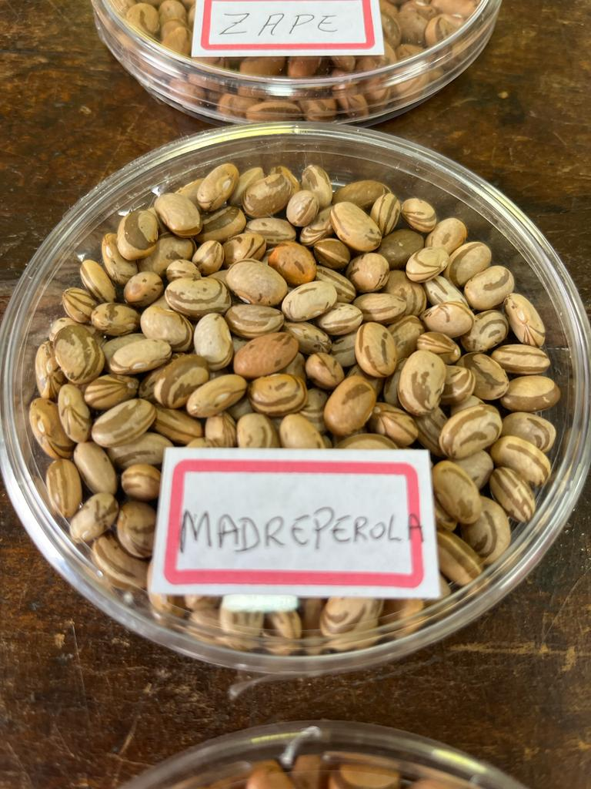
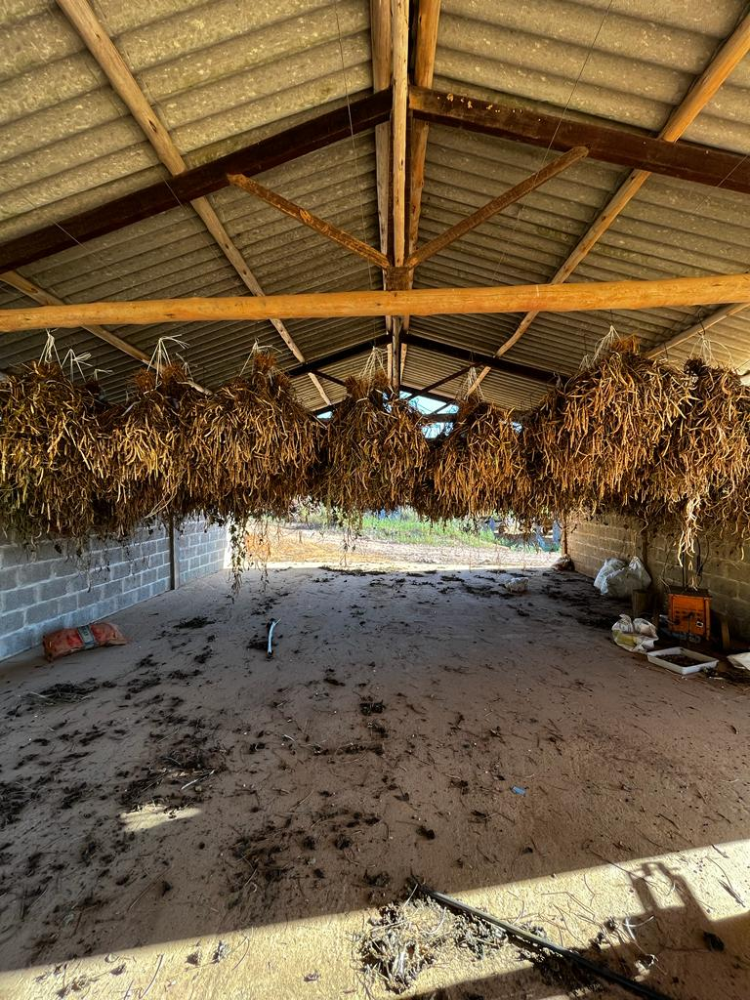
Individual analysis was realized in each trial to get genotypes adjusted means:
\[ \mathbf{Y} = \mathbf{X}_{1}\mathbf{r} + \mathbf{X}_{2}\mathbf{g} + \mathbf{Z}\mathbf{b} + \boldsymbol{\epsilon} \]
where \(\mathbf{Y}_{(n\times1)}\) is vector of observations, \(\mathbf{X_1}_{(n \times r)}\) is a incidence matrix \(\textbf{r}\) of replication effect assumed as fixed, \(\mathbf{X_2}_{(n\times rk)}\) is a incidence matrix \(\textbf{g}\) of genotype effect assumed as fixed, \(\mathbf{Z}_{(n\times k)}\) is a incidence matrix \(\textbf{k}\) of block effect assumed as random and \(\mathbf{\varepsilon}_{(n\times 1)}\) is a vector of random errors.
The variance probability density related to model terms are: \(\textbf{b} \sim N (0,\sigma_{b}^{2}\mathbf{I}_k)\)
The probabilistic model proposed by Dias et al. (2022) was fitted to each trait and setting priors to variance components of genotype, environment, and \((G\times E)\) interaction.
\[ E[{Y}_{ij}] = {\mu} + {g}_i + {a}_j + {(ga)}_{ij} + {\epsilon}_{ij} \]
where \(E[{Y}_{ij}]\) is expectation of observation \(ij\), \({g}_{i}\) is the effect \(i\) of genotypes assumed as random (\(i^{th}\) = 121 genotypes), \({a}_{j}\) is the effect \(j\) of environment assumed as random (\(j^{th}\) = 4 environments), \({ga}_{ij}\) is the effect of \((G\times E)\) interaction assumed as random and \({\varepsilon}\) is the effect of random errors.
Prior distribution was normal density and the variance probability density related to model terms are:
\[{g}_i \sim N (0,{S}^{[g]})\]
\[{a}_j \sim N (0,{S}^{[a]})\]
\[{(ga)}_{ij} \sim N (0,{S}^{[ga]})\]
\[{\sigma} \sim HalfCauchy (0,{S}^{[\sigma]})\]
Parameters of prior distribution was assumed as hyperparameters:
\[ {S}^{[{g}]} \sim \textit{HalfCauchy} (0,\phi) \]
\[ {S}^{[{a}]} \sim \textit{HalfCauchy} (0,\phi) \]
\[ {S}^{[{ga}]} \sim \textit{HalfCauchy} (0,\phi) \]
| trait | effect | var | HPD_0.025 | HPD_0.975 |
|---|---|---|---|---|
| GA | genotype | 0.031 | 0.018 | 0.047 |
| GA | environment | 8.136 | 0.009 | 20.868 |
| GA | gen.env | 0.040 | 0.000 | 0.081 |
| GA | error | 0.036 | 0.002 | 0.082 |
| GY | genotype | 18314.900 | 332.149 | 42239.694 |
| GY | environment | 3808551.300 | 143501.463 | 21978738.500 |
| GY | gen.env | 32543.119 | 1.586 | 156390.836 |
| GY | error | 193951.014 | 69921.263 | 256589.277 |
| PA | genotype | 0.035 | 0.019 | 0.053 |
| PA | environment | 180.519 | 0.150 | 1020.549 |
| PA | gen.env | 0.018 | 0.000 | 0.045 |
| PA | error | 0.032 | 0.007 | 0.059 |
Applying BPSI to carioca common bean panel, 12 families was selected aiming to extract pure lines to GA, GY and PA simultaneously. BPSI has potential to be applied on selection stage in breeding programs.
Quarto enables you to weave together content and executable code into a finished presentation. To learn more about Quarto presentations see https://quarto.org/docs/presentations/.
When you click the Render button a document will be generated that includes:
When you click the Render button a presentation will be generated that includes both content and the output of embedded code. You can embed code like this:
[1] 2